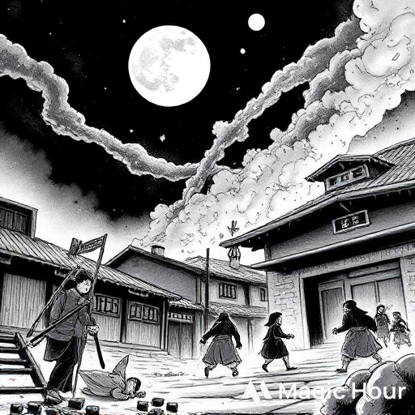
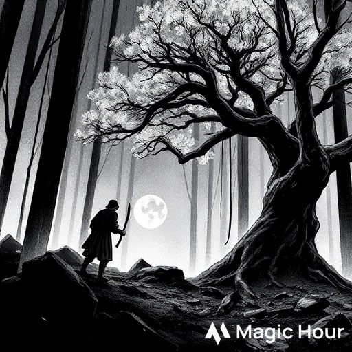
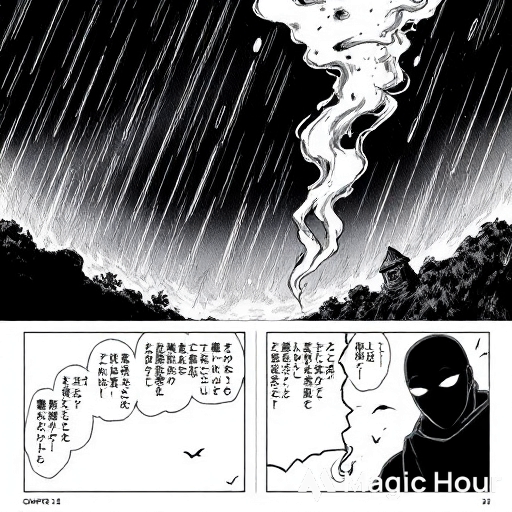
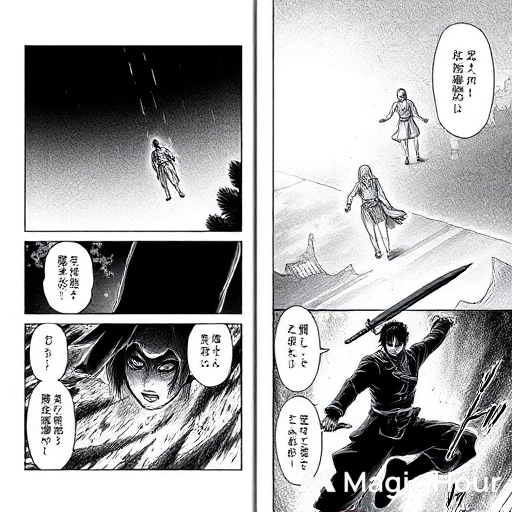
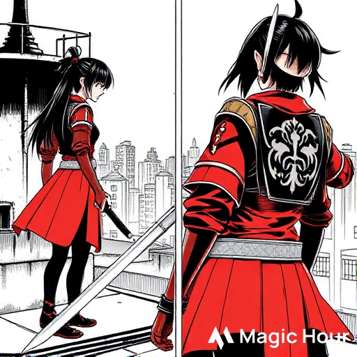
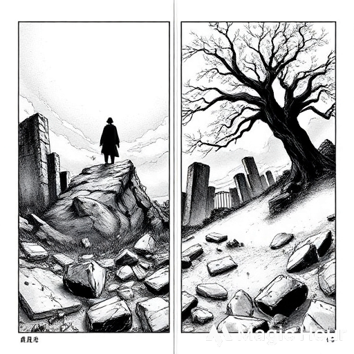
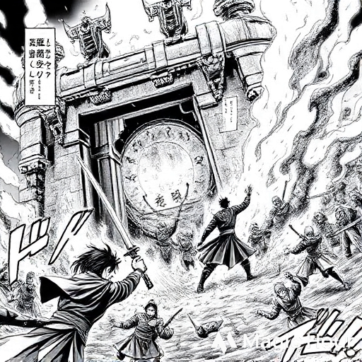

🥷 Manga Title: SengWoo Town
Genre: Action • Tragedy • Ninja • Revenge
⚔️ Chapter 1: The Night of Blood
The air in SengWoo Town was quiet that night — too quiet for a village of ninjas. The moon hung low,
its light slicing through the fog like a blade. Ren, a boy of thirteen, was training quietly in the courtyard when the ground trembled.
Then came the screams.
Flames swallowed the rooftops, shadows danced against the fire. Ren’s father burst through the door,
bleeding from the shoulder. “Ren! Take your sister and run!” he shouted, thrusting a kunai into Ren’s hand.
But before Ren could move, masked figures crashed through the walls.
Steel clashed. Blood sprayed. His father’s final words echoed: “Survive… avenge SengWoo.”
Ren ran through the chaos, dragging his little sister Mei until a collapsing beam separated them.
He saw her tiny hand disappear in smoke. Then darkness claimed him.

🩸 Chapter 2: The Wandering Shadow
Days later, Ren awoke in the forest outside town. His wounds stung; his heart burned even worse. SengWoo Town was gone.
Only blackened ruins and silence remained. He buried what little remained of his family beneath a scorched cherry tree.
He swore an oath: “I’ll never forget. I’ll never forgive.”
A wanderer found him — an old shinobi named Ryuzen, who once served SengWoo. “You carry their blood,” Ryuzen said.
“But vengeance without discipline is suicide.”
Under Ryuzen’s care, Ren trained in secret. Years passed — blades, stealth, ninjutsu. Every scar became a lesson.
Every drop of sweat brought him closer to vengeance.

🩸 Chapter 3: The Whispering Mask
One stormy night, Ryuzen told him the truth: “The massacre was ordered by the Crimson Serpent Clan. They feared SengWoo’s loyalty to the Shogun.”
Ren’s heart hardened. “Then I’ll burn the Serpents to the ground.”
Ryuzen tossed him a black mask. “Then you’ll need to stop being Ren — and start being a shadow.”
From that night, Ren moved under a new name: Kuro, the Ghost of SengWoo. He learned to silence his presence, to blend into the wind.
Legends spread of a masked assassin who struck silently and vanished into smoke.

🩸 Chapter 4: Blades of Betrayal
Kuro infiltrated Crimson Serpent hideouts, one after another. Each strike brought him closer to the truth.
But one night, as he cornered a target, the man gasped — “You… you look just like her.”
Her. Mei.
Kuro’s blade froze midair. “What do you mean?”
“She lives,” the man choked, “raised by the Serpent leader… as his daughter.”
The truth hit harder than any blade. His sister — alive, but raised by his enemies. Ryuzen warned him:
“If she’s one of them now, your heart will betray your blade.”
But Kuro could not stop. Not now.

🩸 Chapter 5: Shadows Reunited
Weeks later, Kuro found her — Mei, now seventeen, standing on a rooftop, dressed in crimson armor,
the Serpent emblem shining on her back.
“Ren?” she whispered, lowering her katana.
He removed his mask. Time froze.
Tears glistened — but her blade did not lower completely. “Father told me you died,” she said softly. “He saved me.”
“Saved you? He killed everyone we loved!”
“I don’t remember them,” she said, voice trembling. “I only know the Serpents gave me a home.”
Their blades met. Brother versus sister. Blood against blood. Neither could strike true.

🩸 Chapter 6: The Fall of the Serpents
The Crimson Serpent fortress fell under fire and steel. Kuro stormed the gates, cutting through waves of enemies.
Ryuzen joined the battle, old but fierce, his final mission clear: end the Serpents.
Inside the inner sanctum, Kuro faced the Serpent leader — the man who took Mei, who destroyed SengWoo.
“You’ve become a fine weapon,” the leader sneered.
“I’m not your weapon,” Kuro said, blade dripping. “I’m their vengeance.”
They fought through the burning hall. Kuro struck the final blow — but not before the leader drove his sword through Ryuzen’s chest.
As Ryuzen fell, he smiled faintly. “Now… you are free.”

🩸 Chapter 7: Dawn Over SengWoo
The sun rose over the ruins of the Serpent fortress. Smoke faded into pale light.
Kuro stood alone — mask broken, body scarred, but heart steady. Mei lay beside him, unconscious, wounded by the chaos.
He carried her away, just as his father once tried to carry him.
When she awoke, he simply said, “The past is ashes. But we can rebuild.”
Together, they returned to the ruins of SengWoo Town. Beneath the cherry tree where their parents rested,
they rebuilt their clan — not for vengeance, but for peace.
And so the Ghost of SengWoo disappeared from legend… leaving only a story whispered by the wind.
